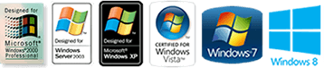
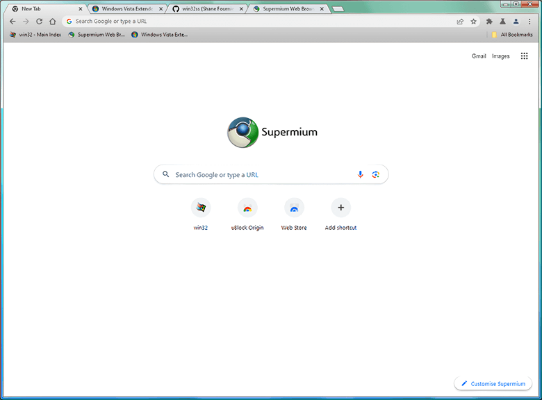
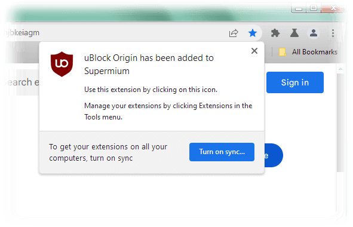

An up-to-date Chromium-based web browser compatible with Windows XP, 2003, Vista, 7, 8.x, and newer.
The official homepage for the Supermium project
Supermium is a drop-in replacement for Google Chrome with privacy and usability enhancements, optimized for legacy and modern Windows systems alike.
Supermium is developed by win32. It aims to restore classic Chrome features, as well as to ensure that compatibility with legacy Windows is preserved.
The future of Chromium browser customization is here.
Download the latest build for your system architecture below:
Supermium 132.0.6834.191 R1
Released 20 hours ago

Visit the
file directory for additional download options
To use the Supermium browser, you'll need:
- Windows XP SP1 or later or Windows Server 2003 SP1 or later
- An Intel Pentium 4 processor or later that's SSE2 capable. Hyper-threading or dual-core recommended.
- A minimum of 768 MB of RAM. 2 GB or greater is recommended for a smooth browsing experience.

Supports your favourite Chrome extensions, including uBlock Origin

Unlike Google Chrome, Manifest V2 is
NOT slated for removal from the Supermium browser.
You may
download the latest builds of uBlock directly from the project's GitHub, in the event that it is not obtainable from the Chrome Web Store.
The latest, feature-complete version of uBlock will be made available here
if/when Manifest V2 builds for Chromium are discontinued.
Key differences between Chrome and Supermium
The Supermium browser has:
- Aero Glass and Aero Glass-style titlebars instead of Windows 10-style ones
- Turnaround for major vulnerability patches generally less than one week from upstream disclosure
- A functional sandbox for enhanced security
- Custom tab options including trapezoidal tabs, transparent tabs, and outlined tabs
- Many flags from ungoogled-chromium
- Google Sync
- On Windows 7 and up, Widevine CDM support for viewing DRM content
- GDI font rendering, using #force-gdi in chrome://flags
- Persistent dark mode on the browser's UI elements, using #force-dark-mode in chrome://flags
- Support for SSE2-only processors in the 32 bit build
Future support for:
- Windows 2000
- Ungoogled Chromium features (in progress)
- WebGPU for D3D9 renderer
- Manifest V2 (once removed by Google)
- ...and more! If there's a feature you want, which cannot be replicated by a Manifest v2/v3 extension, please ask!
It is important to note that Google Chrome is proprietary software, while Supermium, like Chromium is open source. This means that while similar, Google Chrome's feature set cannot be reproduced perfectly by Supermium.
Return to Main Index
Source Code
Privacy Policy

{kind=link}
{kind=link}